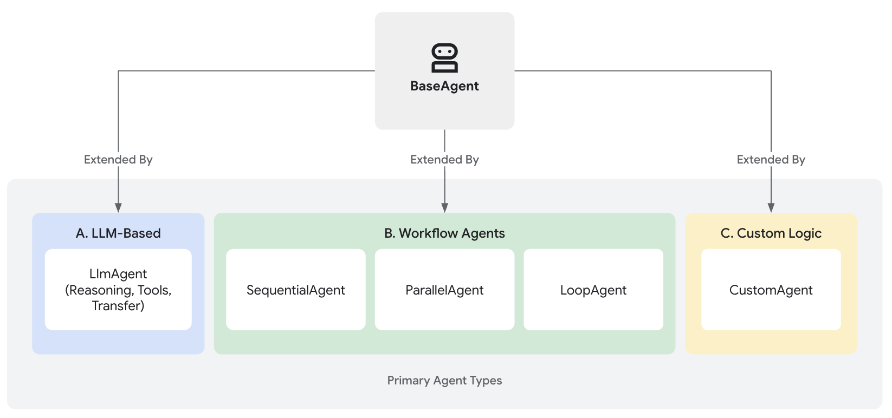

에이전트¶
에이전트 개발 키트(ADK)에서 에이전트는 특정 목표를 달성하기 위해 자율적으로 행동하도록 설계된 독립적인 실행 단위입니다. 에이전트는 작업을 수행하고, 사용자와 상호 작용하며, 외부 도구를 활용하고, 다른 에이전트와 협력할 수 있습니다.
ADK의 모든 에이전트의 기반은 BaseAgent 클래스입니다. 이는 기본적인 청사진 역할을 합니다. 기능적인 에이전트를 만들기 위해, 일반적으로 세 가지 주요 방법 중 하나로 BaseAgent를 확장하여 지능적인 추론에서부터 구조화된 프로세스 제어에 이르기까지 다양한 요구 사항을 충족시킵니다.

핵심 에이전트 카테고리¶
ADK는 정교한 애플리케이션을 구축하기 위해 다음과 같은 고유한 에이전트 카테고리를 제공합니다:
-
LLM 에이전트 (
LlmAgent,Agent): 이 에이전트들은 거대 언어 모델(LLM)을 핵심 엔진으로 활용하여 자연어를 이해하고, 추론하며, 계획하고, 응답을 생성하며, 어떻게 진행할지 또는 어떤 도구를 사용할지 동적으로 결정합니다. 이는 유연하고 언어 중심적인 작업에 이상적입니다. LLM 에이전트에 대해 더 알아보기... -
워크플로우 에이전트 (
SequentialAgent,ParallelAgent,LoopAgent): 이 전문화된 에이전트들은 LLM을 흐름 제어 자체에 사용하지 않고 미리 정의된 결정론적 패턴(순차, 병렬 또는 루프)으로 다른 에이전트의 실행 흐름을 제어합니다. 이는 예측 가능한 실행이 필요한 구조화된 프로세스에 적합합니다. 워크플로우 에이전트 탐색하기... -
사용자 정의 에이전트:
BaseAgent를 직접 확장하여 생성된 이 에이전트들은 표준 유형에서 다루지 않는 고유한 운영 로직, 특정 제어 흐름 또는 전문화된 통합을 구현할 수 있도록 하여 매우 맞춤화된 애플리케이션 요구 사항을 충족시킵니다. 사용자 정의 에이전트 구축 방법 알아보기...
올바른 에이전트 유형 선택하기¶
다음 표는 에이전트 유형을 구별하는 데 도움이 되는 개괄적인 비교를 제공합니다. 후속 섹션에서 각 유형을 더 자세히 살펴보면 이러한 구분이 더 명확해질 것입니다.
| 기능 | LLM 에이전트 (LlmAgent) |
워크플로우 에이전트 | 사용자 정의 에이전트 (BaseAgent 하위 클래스) |
|---|---|---|---|
| 주요 기능 | 추론, 생성, 도구 사용 | 에이전트 실행 흐름 제어 | 고유한 로직/통합 구현 |
| 핵심 엔진 | 거대 언어 모델 (LLM) | 미리 정의된 로직 (순차, 병렬, 루프) | 사용자 정의 코드 |
| 결정론 | 비결정론적 (유연함) | 결정론적 (예측 가능함) | 구현에 따라 둘 다 가능 |
| 주요 용도 | 언어 작업, 동적 결정 | 구조화된 프로세스, 오케스트레이션 | 맞춤형 요구 사항, 특정 워크플로 |
함께 작동하는 에이전트: 멀티 에이전트 시스템¶
각 에이전트 유형이 고유한 목적을 가지고 있지만, 진정한 힘은 종종 이들을 결합할 때 나옵니다. 복잡한 애플리케이션은 종종 다음과 같은 멀티 에이전트 아키텍처를 사용합니다:
- LLM 에이전트는 지능적이고 언어 기반의 작업 실행을 처리합니다.
- 워크플로우 에이전트는 표준 패턴을 사용하여 전체 프로세스 흐름을 관리합니다.
- 사용자 정의 에이전트는 고유한 통합에 필요한 전문화된 기능이나 규칙을 제공합니다.
이러한 핵심 유형을 이해하는 것은 ADK로 정교하고 유능한 AI 애플리케이션을 구축하는 첫걸음입니다.
다음 단계는?¶
이제 ADK에서 사용할 수 있는 다양한 에이전트 유형에 대한 개요를 파악했으니, 이들이 어떻게 작동하고 효과적으로 사용하는지에 대해 더 깊이 알아보세요:
- LLM 에이전트: 지침 설정, 도구 제공, 계획 및 코드 실행과 같은 고급 기능 활성화를 포함하여 거대 언어 모델로 구동되는 에이전트를 구성하는 방법을 탐색하세요.
- 워크플로우 에이전트: 구조화되고 예측 가능한 프로세스를 위해
SequentialAgent,ParallelAgent,LoopAgent를 사용하여 작업을 조율하는 방법을 배우세요. - 사용자 정의 에이전트: 특정 요구 사항에 맞게 고유한 로직과 통합을 갖춘 에이전트를 구축하기 위해
BaseAgent를 확장하는 원칙을 알아보세요. - 멀티 에이전트: 복잡한 문제를 해결할 수 있는 정교하고 협력적인 시스템을 만들기 위해 다양한 에이전트 유형을 결합하는 방법을 이해하세요.
- 모델: 사용 가능한 다양한 LLM 통합에 대해 알아보고 에이전트에 적합한 모델을 선택하는 방법을 배우세요.